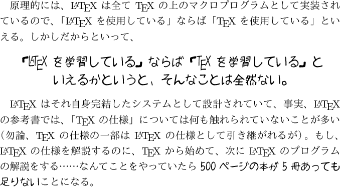
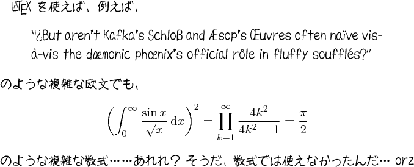
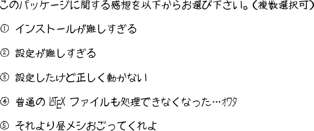

|
|
En toi Pythmeni tes TeXnopoleos
［電脳世界の奥底にて］ |
「インフォシーク isweb ライト」サービス終了に伴い、
本サイトは以下のURLに移転することになりました。
現在のサイトは、10月末を以て終了となります。
http://zrbabbler.sp.land.to/pxmika.html
現在のサイトは、10月末を以て終了となります。
http://zrbabbler.sp.land.to/pxmika.html
PXmika パッケージ
概要
フリーの手書きフォントとして有名な「みかちゃん」を pLaTeX2e / upLaTeX2e で使用する為のパッケージである。 和欧文共に対応し、欧文は OT1 の範囲の文字が全て使える。 既に同じ機能を提供するパッケージが幾つか Web に公開されているが、 こちらは「みかちゃん」を JIS メトリックで使うための 調整を行っているので、横書き・縦書きともに、 従来のものより優れた出力結果が得られるはずである。
対応環境
- TeX 処理系： pLaTeX2e ／ upLaTeX2e
- DVI ウェア： dvipdfmx ／ dviout
ダウンロード
インストール方法については、 パッケージ付属の説明書（README）を参照してほしい。 一般に、フォント関係のパッケージはインストールと設定の手順が 非常に複雑であることが多いが、 このパッケージについても、残念ながら、 その例に漏れていない。
サンプル
部分的に「みかちゃん」を使う場合
pxmika パッケージを読み込むと、
\mikafamily： 現在のフォントを 「みかちゃん」に変更する\textmika{‹テキスト›}： 中の テキストのフォントを「みかちゃん」にする
の命令を使えるようになる。
それぞれ、LaTeX 標準の \sffamily / \textsf
の命令と同じ使い方である。
\documentclass[a4paper]{jarticle}
\usepackage{pxmika} % パッケージ読込
\begin{document}
原理的には、{\LaTeX} は全て {\TeX} の上のマクロプログラム
として実装されているので、「{\LaTeX} を使用している」
ならば「{\TeX} を使用している」といえる。
しかしだからといって、
\begin{center}\mikafamily\large % この環境内を「みかちゃん」で
「{\LaTeX} を学習している」ならば「{\TeX} を学習している」と\\
いえるかというと、そんなことは全然ない。
\end{center}
{\LaTeX} はそれ自身完結したシステムとして設計されていて、
事実、{\LaTeX} の参考書では、「{\TeX} の仕様」
については何も触れられていないことが多い
（勿論、{\TeX} の仕様の一部は {\LaTeX} の仕様として引き継がれるが）。
もし、{\LaTeX} の仕様を解説するのに、{\TeX} から始めて、
次に {\LaTeX} のプログラムの解説をする……なんてことをやっていたら\
%% ↓\textmika の使用例
\textmika{500 ページの本が 5 冊あっても足りない}ことになる。
\end{document}

既定のフォントを「みかちゃん」にする場合
pxmika パッケージの読込時にオプションに
mainfont を指定すると、
本文の既定のフォントが「みかちゃん」になる。
\documentclass[a4paper]{jarticle}
\usepackage[mainfont]{pxmika} % 「みかちゃん」を既定に
\begin{document}
{\LaTeX} を使えば、例えば、
\begin{quote}
``?`But aren't Kafka's Schlo{\ss} and {\AE}sop's {\OE}uvres
often na\"{\i}ve vis-\`a-vis the d{\ae}monic ph{\oe}nix's
official r\^ole in fluffy souffl\'es?''
\end{quote}
のような複雑な欧文でも、
\[
\left( \int_0^\infty \frac{\sin x}{\sqrt x}\,\mathrm{d}x \right)^2 =
\prod_{k=1}^\infty \frac{4k^2}{4k^2-1} = \frac{\pi}{2}
\]
のような複雑な数式……あれれ？\
そうだ、数式では使えなかったんだ… orz
\end{document}

処理系に upLaTeX を使って UTF-8 で記述すれば、 「Windows 機種依存文字」や「半角カナ」も使える。
% このファイルの文字コードは UTF-8
% uplatex で組版する
\documentclass[a4paper]{ujarticle}
\usepackage[mainfont]{pxmika}
\begin{document}
このパッケージに関する感想を以下からお選び下さい。
（複数選択可）
\begin{enumerate}
\item[①] インストールが難しすぎる
\item[②] 設定が難しすぎる
\item[③] 設定したけど正しく動かない
\item[④] 普通の {\LaTeX} ファイルも処理できなくなった…ｵﾜﾀ
\item[⑤] それより昼メシおごってくれよ
\end{enumerate}
\end{document}
